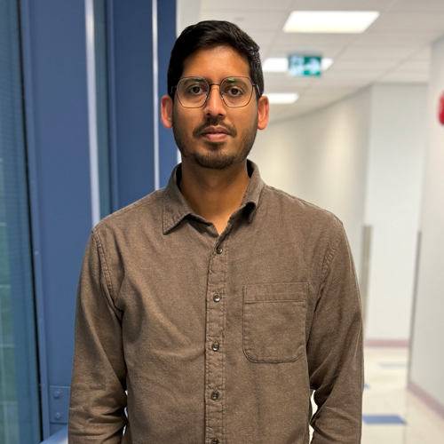

People
Hadeesha Piyadasa, PhD
Assistant Professor, Department of Biochemistry, Microbiology and Immunology, Faculty of Medicine, University of Ottawa
Scientist, CHEO Research Institute

Dr. Hadeesha Piyadasa studies tissue biology through spatial multi-omics, combining molecular imaging with experimental and computational approaches. He completed a BSc (Honours) in Biochemistry and a PhD in Immunology at the University of Manitoba, followed by postdoctoral training in the Department of Pathology at Stanford University. He then began his independent appointment at the University of Ottawa and the CHEO Research Institute.